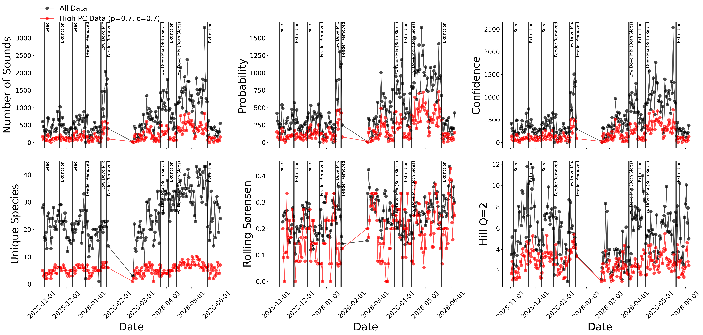
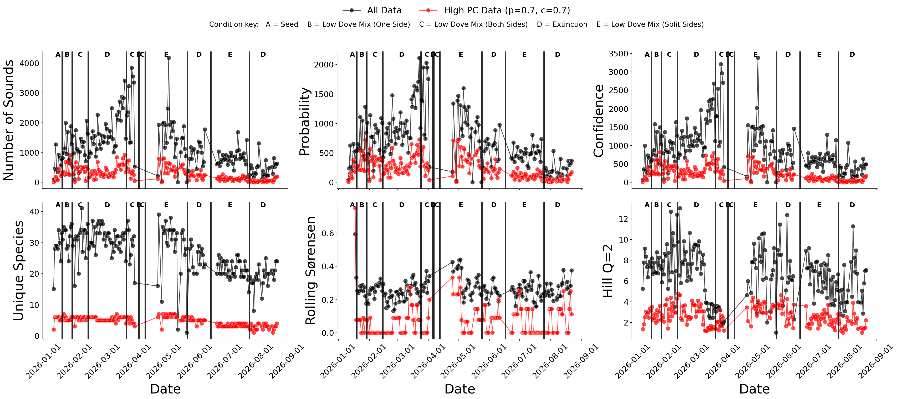
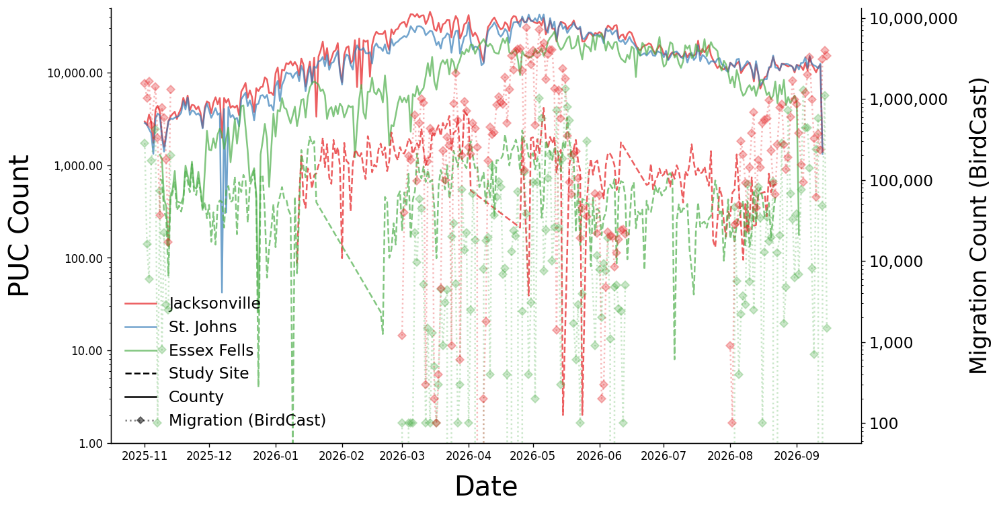
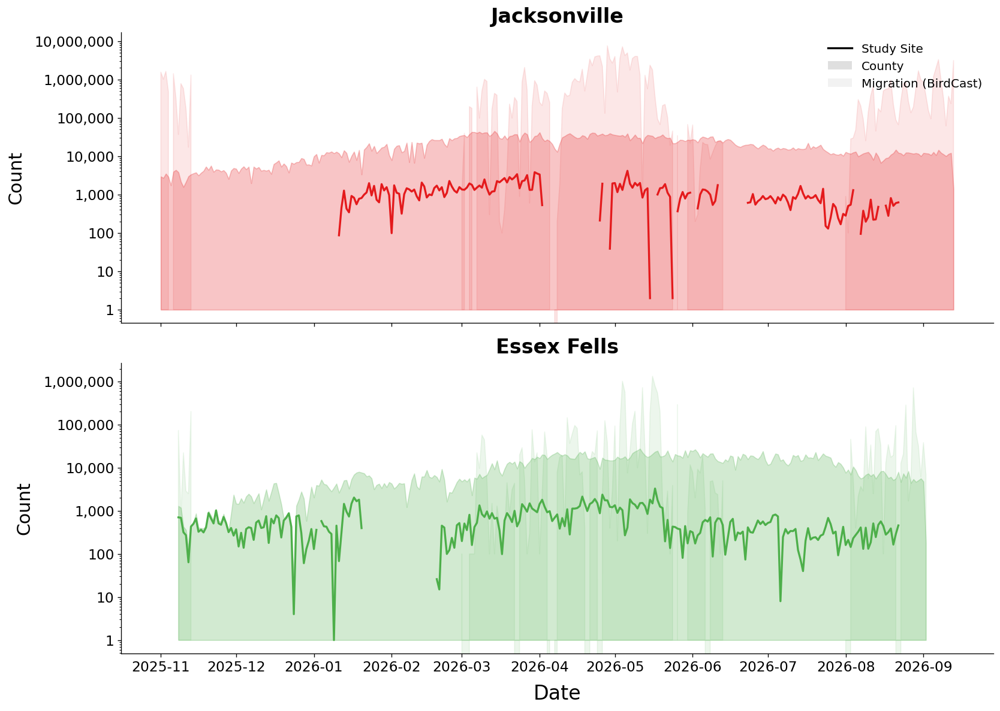

Backyard Ecology Dashboard
Last updated: 2026-09-16 15:42
Daily Bird Feeder Visits by Species

Multiple Baseline of Feeder Visits

Ecological Diversity Metrics

Correlation Matrix of Diversity Metrics

Auditory Data from Essex Fells PUC

Auditory Data from Jacksonville PUC

Auditory Data from Study Site vs County with Migration

Study Site vs County PUC Activity by Station

US Flyway Migration - Total Birds
Heatmap: Date vs Time of Day as a Count of Observations

Heatmap: Date vs Time of Day as a Proportion of Observations

Proportion of visits by wind speed and temperature

Species Clustermap Using Visits and Weather

All Birds: Bout Analysis

All Birds: Bout Analysis Separating Seed and No Seed Conditions

All Birds: Bout Analysis (Within-Date Only)

Bird Species: Bout Analysis (log space)

Seed Preference by Bird and Feeder Side (Right Side More Open)

Number of Pecks per Visit by Seed Type